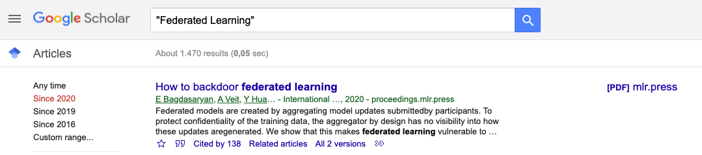

Seminar on
Federated Learning in Healthcare
Shadi Albarqouni, PhD
AI Young Investigator Group Leader at Helmholtz AI | TUM Junior Fellow at TU Munich
Content
- Brief introduction about Federated Learning
- It is the right thing at the right time!
- Course structure
- Registration
Deep Learning success comes at the cost of collecting and processing a massive amount of data , which often are not accessible due to privacy issues .
Federated Learning has been recently introduced to allow training DL models without sharing the data .
Taken from Rieke, N., Hancox, J., Li, W., Milletari, F., Roth, H.R., Albarqouni, S., Bakas, S., Galtier, M.N., Landman, B.A., Maier-Hein, K. and Ourselin, S., 2020. The future of digital health with federated learning. NPJ digital medicine, 3(1), pp.1-7.
The principal challenges , to overcome, concern the nature of medical data, namely
- Data heterogeneity; severe class-imbalance, few amounts of annotated data, inter-/intra-scanners variability (domain shift), and inter-/intra-observer variability (noisy annotations)
- System Heterogeneity
- Privacy-Issues
- Communication Efficiency
Right thing at the right time


Course Structure
Basic Info.
- Type: Master Seminar (IN2107)
- Language: English
- SWS: 2
- ECTS: 5
- Webpage: https://albarqouni.github.io/courses/flhsose2021/
- Time: Fridays, 10 - 12
- Location: Virtual Event
- Requirements: Solid Background in Machine/Deep Learning
Tutors
Objectives: Learn through read, understand, present, and discuss many scientific papers1 tackling the challenges present in Federated Learning.
1Our pool of papers includes the ones published in NeurIPS, ICML, ICLR, IEEE TMI, MedIA, MICCAI, MIDL, and ISBI.
Schedule:
| Date | Session |
|---|---|
| 16.04.2021 | Federated Learning; Challenges, Methods, and Future |
| 30.04.2021 | Data Heterogeneity I |
| 14.05.2021 | Data Heterogeneity II |
| 28.05.2021 | System Heterogeneity |
| 11.06.2021 | Privacy-Issues |
| 25.06.2021 | Explainability and Accountability |
Evaluation:
- Presentation (60%): The selected paper is presented to the other participants (30 minutes presentation plus 10 minutes Q&A)
- Blog | Poster (30%): A blog post of 1000-1500 words excluding references should be submitted before the deadline
- Attendance (10%): Students are expected to participate actively in all seminar sessions
Insights into the course evaluation?
If you are interested in this seminsr course, please write a brief motivation paragraph (few lines) showing your interest and your background in Machine/Deep Learning and send it with a subject “FLH_Motivation”, to Shadi Albarqouni (shadi.albarqouni@tum.de). Deadline is 16.02.2021.
Don’t forget to register at TUM matching system 11.02 to 16.02.2021: register via matching.in.tum.de